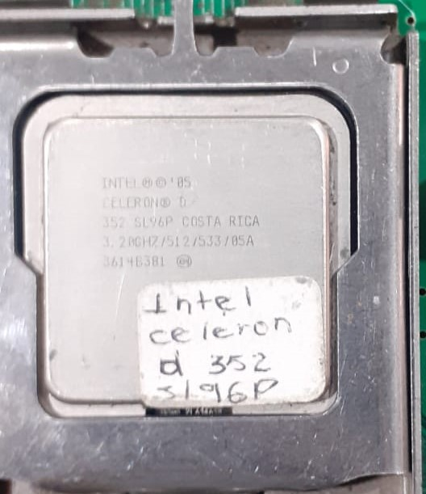
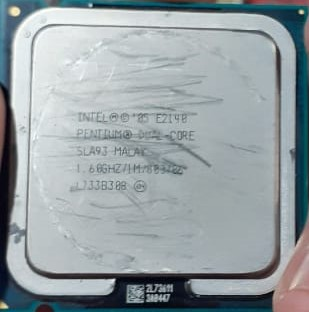

Practica 1
La práctica consistió en desarmar las diferentes partes de un CPU y tras retirarlas todas, volver a colocarlas en su lugar correctamente, con objetivo de conocer las partes de CPU.
Principales componentes de un CPU
Tarjeta Madre
La tarjeta madre es la "cerebro" de la computadora. Conecta y coordina el procesador, la memoria, las tarjetas y otros componentes. Proporciona energía, controla la entrada/salida, tiene el BIOS/UEFI, ranuras de expansión y conectores para dispositivos. También maneja el reloj del sistema y conectores de almacenamiento. Es esencial para el funcionamiento de la computadora.

Memoria RAM
La memoria RAM es como la "mesa de trabajo" de la computadora. Almacena datos temporales para que la CPU pueda acceder rápidamente mientras la computadora está encendida. Ayuda en la multitarea y mejora el rendimiento general del sistema. Es rápida, volátil y se borra cuando apagas la computadora. Es esencial para un funcionamiento eficiente.

Disco Duro
El disco duro es como el "almacén" de la computadora. Guarda permanentemente archivos, programas y el sistema operativo. Tiene mucha capacidad y la información persiste aunque apagues la computadora. Permite arrancar el sistema y acceder a datos de manera rápida.

Fuente de Poder
La fuente de poder en una CPU suministra electricidad a la computadora. Convierte la energía de la toma de corriente para alimentar la placa madre, procesador, tarjetas y más. Asegura un suministro constante, protege contra sobrecargas y, en algunos casos, incluye ventiladores para evitar el sobrecalentamiento. Es esencial para el funcionamiento de la computadora.

Disipador
El disipador en un CPU enfría el procesador para evitar el sobrecalentamiento. Utiliza aletas y un ventilador para dispersar el calor. Esto es crucial para mantener un rendimiento estable y prevenir daños al procesador.
Procesador
El procesador en una CPU es como el cerebro de la computadora. Ejecuta tareas, realiza cálculos y procesa datos. Puede tener múltiples núcleos para hacer varias cosas a la vez. La velocidad de reloj y la memoria caché afectan su rendimiento. Es esencial para que la computadora funcione y determine qué tan rápido puede realizar tareas.
Practica 2
La practica consistia en conocer algunos tipos de procesadores para despues investigarlos mas a fondo, aprendiando de sus diferentes caracteristicas y cuales eran mejores que los otros
Intel Celeron D 352
- Arquitectura: Basada en la arquitectura NetBurst.
- Frecuencia: Funciona a una frecuencia de 3.20 GHz.
- Núcleos: Es un procesador de un solo núcleo.
- Tecnología Hyper-Threading: No cuenta con tecnología Hyper-Threading.
- Caché: Tiene 512 KB de caché L2.
- Socket: Se utiliza el socket LGA775.
- Proceso de fabricación: Fabricado con tecnología de 90 nm.
- Consumo de energía (TDP): El TDP (Thermal Design Power) es de 86W.

Intel Pentium III
- Arquitectura: Basada en la arquitectura P6.
- Frecuencia: Las frecuencias variaron según los modelos, generalmente desde unos pocos cientos de megahercios hasta alrededor de 1.4 GHz.
- Núcleos: Es un procesador de un solo núcleo.
- Tecnología de fabricación: Fabricado con tecnología de proceso de 0.25 micrones en las primeras versiones y luego se trasladó a procesos más avanzados de 0.18 y 0.13 micrones en versiones posteriores.
- Caché: Contaba con niveles de caché L1 y L2, siendo el tamaño de la caché L2 variable según el modelo.
- Instrucciones: Admite conjuntos de instrucciones MMX (Multimedia Extension) y SSE (Streaming SIMD Extensions).
- Socket: Utiliza varios tipos de sockets como el Slot 1 y Socket 370.
- TDP (Thermal Design Power): El consumo de energía variaba según el modelo, pero generalmente estaba en el rango de 15 a 40 vatios.
Intel Pentium
- Arquitectura: Basada en la arquitectura NetBurst.
- Frecuencia: Las frecuencias iniciales eran de alrededor de 1.3 GHz y aumentaron a velocidades superiores a 3.8 GHz en modelos posteriores.
- Núcleos: Es un procesador de un solo núcleo.
- Tecnología de fabricación: Inicialmente fabricado con tecnología de proceso de 0.18 micrones, y más tarde se movió a 0.13 y 0.09 micrones en versiones posteriores.
- Caché: Contaba con niveles de caché L1 y L2. El tamaño de la caché L2 variaba según el modelo y la versión.
- Hyper-Threading: Algunos modelos del Pentium 4 introdujeron la tecnología Hyper-Threading, permitiendo al procesador manejar tareas múltiples más eficientemente.
- Instrucciones: Admite conjuntos de instrucciones SSE2 (Streaming SIMD Extensions 2).
- Socket: Utiliza el socket 478 inicialmente y luego se movió al LGA 775 en versiones posteriores.
- TDP (Thermal Design Power): El consumo de energía variaba según el modelo, pero generalmente estaba en el rango de 35 a 115 vatios.
Intel Pentium Dual-Core
- Arquitectura: Varía según la generación. Puede estar basada en la arquitectura Core o en otras arquitecturas más recientes.
- Frecuencia: Las frecuencias varían significativamente según el modelo específico y la generación, pero generalmente oscilan entre 1.6 GHz y 3.5 GHz.
- Núcleos: Es un procesador dual-core, lo que significa que tiene dos núcleos de procesamiento en un solo chip.
- Tecnología de fabricación: Dependiendo de la generación, puede estar fabricado con tecnologías de proceso de 45 nm, 32 nm, o más avanzadas.
- Caché: Incluye niveles de caché L1 y L2. El tamaño de la caché varía según el modelo específico y la generación.
- Hyper-Threading: Algunos modelos de Pentium Dual-Core pueden tener o no soporte para Hyper-Threading, permitiendo un mejor rendimiento en tareas multitarea.
- Instrucciones: Admite conjuntos de instrucciones más modernos como SSE4.1 y SSE4.2.
- Socket: Ha utilizado diferentes sockets a lo largo de las generaciones, como LGA 775, LGA 1156, LGA 1155, entre otros.
- TDP (Thermal Design Power): El consumo de energía varía según el modelo específico, pero suele ser moderado en comparación con procesadores más potentes.

Intel Xeon E5
- Arquitectura: Basada en varias arquitecturas, incluyendo Sandy Bridge, Ivy Bridge, Haswell, Broadwell, y Skylake, dependiendo de la generación.
- Núcleos: La serie Xeon E5 puede tener diferentes configuraciones de núcleos, incluyendo variantes con múltiples núcleos y capacidades de multihilo (Hyper-Threading).
- Frecuencia: Las frecuencias varían según el modelo y la generación, generalmente en un rango de varios cientos de megahercios a varios gigahercios.
- Caché: Incluye niveles de caché L1, L2 y L3. El tamaño específico de la caché varía según el modelo y la generación.
- Soporte para memoria: Los procesadores Xeon E5 suelen admitir una gran cantidad de memoria RAM ECC (Error-Correcting Code) y pueden estar diseñados para utilizar canales de memoria DDR3 o DDR4, dependiendo de la generación.
- Instrucciones: Admite diversas extensiones de instrucciones, incluyendo SSE4, AVX, y otras, según la generación.
- Tecnología de fabricación: Varía según la generación, con tecnologías de proceso de 32 nm, 22 nm, 14 nm, y 10 nm en diferentes modelos.
- Socket: Utiliza varios sockets, incluyendo LGA 2011 y LGA 2011-3 en diferentes generaciones.
Practica 3
La práctica consistía en intercambiar y probar diferentes memorias RAM en 4 computadoras para después probar si el computador funcionaba con dicha tarjeta. Algunas tarjetas funcionaban y la computadora encendía, otras encajaban pero no prendía la computadoras y algunas no entraban en el espacio de la memoria RAM.
Practica 4
La práctica cuatro consistía así como la primera practica en desarmar cada uno de los componentes del interior de un computador para después volver a colocarlas en su sitio, con la gran diferencia de que esta vez la práctica se realizaba con equipos funcionales, con el objetivo de lograr que la computadora funcione correctamente luego de ser desarmada y rearmada.
Luego de volver a colocar cada elemento de la computadora en su lugar, se procede a conectarla a un monitor, encender el CPU y probar si todo funciona correctamente
Practica 5
La práctica cinco consistía en una serie de ejercicios didácticos sobre los diferentes componentes de una PC y sus características, funciones y gamas de computadoras, realizadas mediante realidad virtual, calificando mediante tiempo y errores la puntuación en el ejercicio.